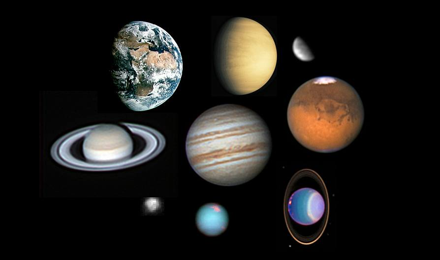

Планеты Солнечной системы
Согласно официальной позиции Международного астрономического союза (МАС), организации присваивающей имена астрономическим объектам, планет всего 8.
Текущее положение среди планет Солнечной системы
Плутон был исключен из разряда планет в 2006 году. т.к. в поясе Койпера находятся объекты которые больше/либо равны по размерам с Плутоном. Поэтому, даже если его принимать его за полноценное небесное тело, то тогда необходимо к этой категории присоединить Эриду, у которой с Плутоном почти одинаковый размер.
Планеты Солнечной системы по порядку
По определению MAC, есть 8 известных планет: Меркурий, Венера, Земля, Марс, Юпитер, Сатурн, Уран и Нептун.Все планеты делят на две категории в зависимости от их физических характеристик: земной группы и газовые гиганты.